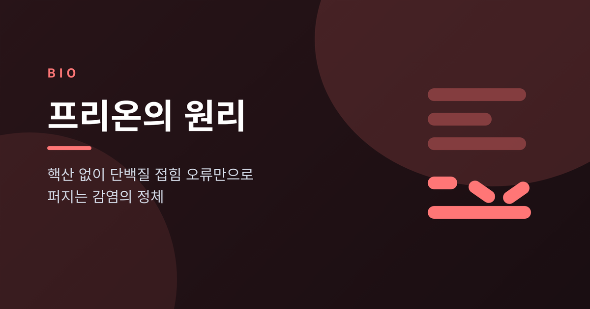
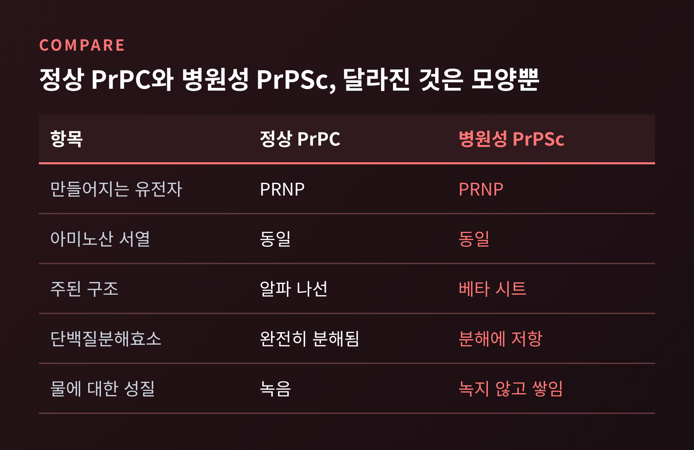
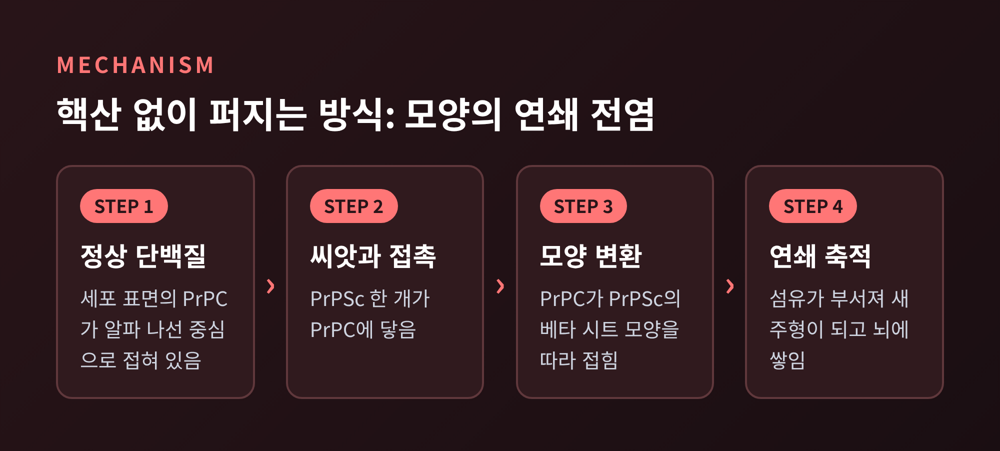
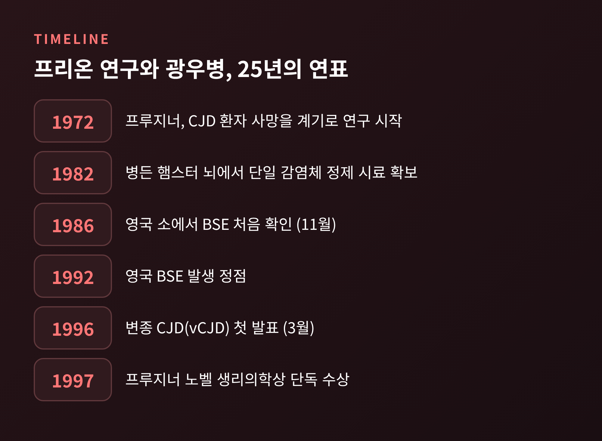
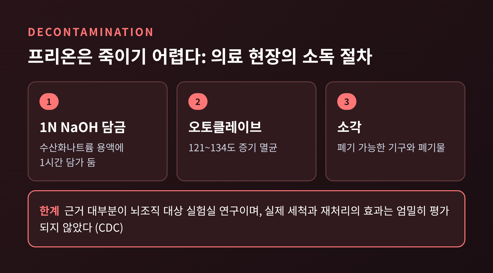

오늘은 프리온의 원리에 대해 이야기해 보려 합니다.
프리온은 DNA나 RNA 없이 단백질 하나가 잘못 접히는 것만으로 다른 단백질을 같은 모양으로 바꿔 퍼지는 감염체입니다.
크로이츠펠트-야콥병, 광우병, 만성소모성질환이 모두 여기에 속하며, 열과 소독에 강하다는 점 때문에 지금도 치료가 어렵습니다.
이 글은 일반 교양 차원의 정리이며, 진단이나 치료를 권하는 글은 아닙니다.
우리 몸의 세포 표면에는 PrPC라는 단백질이 있습니다. 정상형입니다.
병을 일으키는 형태는 PrPSc라고 부릅니다.
두 단백질은 같은 PRNP 유전자에서 만들어지고, 아미노산 서열도 같습니다.
다른 것은 접힌 모양 하나뿐입니다. PrPC는 주로 알파 나선, PrPSc는 주로 베타 시트 구조를 이룹니다.
모양이 달라지면 성질도 달라집니다.
PrPC는 단백질분해효소에 완전히 분해됩니다. PrPSc는 분해에 저항하고, 물에도 녹지 않습니다.
그래서 신경세포 주변에 쌓이고, 뇌조직에는 스펀지처럼 구멍이 생깁니다. 질환 이름에 '해면상 뇌병증'이 붙은 이유입니다.

세균과 바이러스는 DNA나 RNA를 복제해서 늘어납니다.
프리온에는 그런 핵산이 없습니다. 퍼지는 방법은 '모양의 전염'입니다.
PrPSc가 정상 PrPC에 닿으면, PrPC가 PrPSc의 모양을 따라 접힙니다.
새로 생긴 PrPSc는 다시 다른 PrPC를 바꿉니다. 연쇄 반응입니다.
섬유 모양으로 쌓인 PrPSc가 조각조각 부서지면 조각마다 새로운 주형이 되어 속도가 붙습니다. 이를 씨앗-핵 형성 모델이라고 부릅니다.
증상은 수년 뒤에 나타나지만, 나타난 뒤에는 빠르게 진행하는 것이 특징입니다.

양의 스크래피는 18세기 아이슬란드에서 이미 기록된 병입니다.
스크래피와 크로이츠펠트-야콥병(CJD)은 병든 뇌 추출물로 다른 동물에게 옮길 수 있었습니다.
스탠리 프루지너는 1972년 CJD 환자의 죽음을 계기로 이 병의 원인을 파고들었습니다.
1982년에는 병든 햄스터 뇌에서 단일 감염체를 담은 정제 시료를 얻었습니다.
그는 이것을 '단백질성 감염 입자'라는 뜻의 프리온(prion)이라 이름 붙였습니다.
학계의 반응은 냉담했습니다.
감염체에 핵산이 없다는 주장은 당시 알려진 모든 감염체와 어긋났기 때문입니다.
생쥐 실험은 증상이 나타나기까지 한 번에 약 200일이 걸렸고, 프리온 유전자가 사람을 포함해 검사한 모든 동물에 있다는 사실도 이론에 의문을 던졌습니다.
그래도 증거는 쌓였고, 프루지너는 1997년 노벨 생리의학상을 단독으로 받았습니다. 수상 이유는 '감염의 새로운 생물학적 원리'를 발견했다는 것이었습니다.
참고로 뉴기니 포레족의 쿠루를 연구한 가이두섹은 1976년에 같은 상을 받았습니다. 쿠루는 훗날 프리온병으로 확인되었습니다.

CJD부터 보겠습니다.
고전적 CJD는 전 세계에서 해마다 100만 명당 1~2명이 사망하는 드문 병입니다. 미국에서는 연 500~600건 정도입니다.
평균 발병 연령은 60대 후반이고, 치매와 보행 장애, 갑작스러운 근육 경련, 시각 이상이 나타납니다. 대개 증상 시작 후 1년 안에 사망합니다.
약 85%는 원인을 알 수 없는 산발성이고, 5~15%는 PRNP 유전자 변이를 물려받은 가족성입니다.
나머지는 오염된 성장호르몬이나 경막 이식, 수술 기구를 통해 생기는 의인성입니다. 영국에서는 1970년 이후 의인성 CJD가 90건 기록되었습니다.
광우병(BSE)은 사정이 다릅니다.
영국에서 1986년 11월 처음 확인되었고, 1992년에 정점을 찍었습니다. 2001년 9월까지 약 18만 건이 보고되었습니다.
감염된 소의 육골분을 다시 소에게 먹인 사료가 확산 경로로 지목되었고, 영국은 1988년 6월 반추동물 사료 금지, 1996년 모든 가축 사료로의 금지를 이어갔습니다.
1996년 3월에는 소고기 섭취와 연관된 변종 CJD(vCJD)가 발표되었습니다. 20대 이하에서도 나타난다는 점이 충격이었습니다.
영국의 vCJD는 모두 178명이었고, 전원이 사망했습니다. 마지막 사례는 2014년에 발병해 2016년에 보고되었습니다.
만성소모성질환(CWD)은 사슴, 엘크, 말코손바닥사슴, 순록의 병입니다.
1960년대 사육 사슴에서 처음 확인되었고, 야생 사슴의 첫 보고는 1981년이었습니다.
미국에서는 30개 주 이상에서 발견되었습니다. 체액으로 퍼지고, 오염된 토양에 수년간 남을 수 있습니다.
사람 감염은 보고되지 않았습니다. 다만 원숭이 실험에서 가능성이 시사되어 이론적 위험으로 보고 연구가 이어지고 있습니다.
세균과 바이러스는 열에 변성되거나 핵산이 파괴되면 힘을 잃습니다.
프리온은 접힌 모양이 곧 감염성입니다. 게다가 PrPSc는 분해효소에 저항하고 표준 소독에도 잘 견딥니다.
미국 질병통제예방센터(CDC)도 CJD 프리온이 '죽이기 어렵다'고 표현합니다.
의료 현장에서는 기구를 1N 수산화나트륨이나 차아염소산나트륨에 담근 뒤 121~134℃ 증기로 오토클레이브하는 방식이 쓰입니다. 폐기 가능한 기구는 소각합니다.
뇌, 척수, 눈은 감염성이 높은 조직이고, 뇌척수액이나 간, 폐, 비장 등은 낮은 조직으로 분류됩니다.
다만 이 소독 방법의 근거는 대부분 뇌조직을 이용한 실험실 연구이고, 실제 세척과 재처리의 효과는 엄밀하게 평가되지 않았다는 한계가 CDC 안내에도 적혀 있습니다.
이런 절차가 자리 잡은 뒤로 수술 기구에 의한 전파는 1976년 이후 보고되지 않았습니다.

모든 프리온병은 지금까지 치명적이며, 승인된 치료법이나 백신이 없습니다. 의료진은 증상을 완화하는 지지 요법을 중심으로 돌봅니다.
연구가 없는 것은 아닙니다.
영국 UCL 연구진이 만든 항체 PRN100은 2018년 10월부터 2019년 7월까지 환자 6명에게 투여되었습니다. 부작용은 없었고 약물이 뇌에 도달하는 것도 확인되었습니다. 3명에서는 목표 농도일 때 진행이 안정된 듯 보였지만 6명 모두 사망했습니다.
표본이 너무 작아 효과를 판단할 수 없고, 정식 임상시험이 필요하다는 것이 연구진의 입장입니다.
또 다른 시도인 ION717은 PRNP의 RNA를 겨냥해 프리온 단백질 생성 자체를 줄이려는 안티센스 약물입니다. 동물 모델에서는 발병이 늦춰지고 생존이 늘었습니다.
사람을 대상으로는 1/2a상 임상시험이 설계되어 있으며, 아직 승인되지 않은 연구용 약물입니다.
방향은 분명합니다. 이미 잘못 접힌 단백질을 되돌리기보다, 재료가 되는 PrPC를 줄이거나 막는 쪽입니다.
다만 아직 확인된 치료는 없다는 점을 분명히 해 두고 싶습니다.
정리하면 이렇습니다.
프리온은 유전 정보 없이 모양만으로 퍼지는 감염체이고, 그 단순함 때문에 오히려 막기 어렵습니다.
"감염의 단위가 유전자가 아니라 단백질의 모양일 수 있다."
프루지너가 오래 들어야 했던 회의 속에서 증명한 것은 이 한 문장이었습니다.
잘못 접힌 모양 하나가 어디까지 번질 수 있는지, 그 질문은 지금도 연구실에서 이어지고 있습니다.